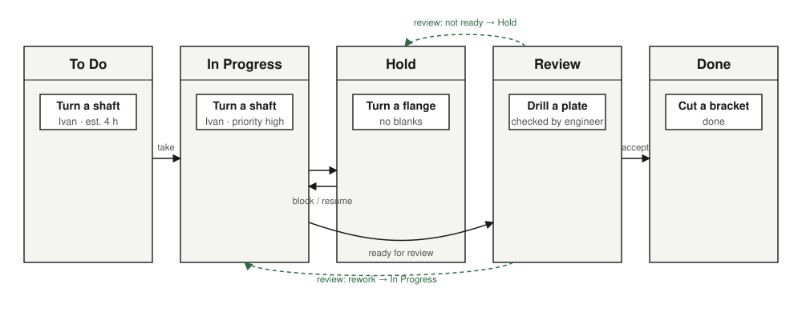

Lehre / Einheit 15 · 10.11.2026
Vom Kanban-Board zu Trello und Jira: Aufgabenstatus, Kanban und Scrum
Woher To Do, In Progress, Hold, Review und Done stammen, warum offline geplant wird, wie sich Trello von Jira unterscheidet und wann Kanban oder Iterationen passen.
10.11.2026Einheit 15 / 1601:10:59Vorlesung
Kurschronologie
Ingenieurnotizen
Woher To Do, In Progress, Hold, Review und Done stammen, warum offline geplant wird, wie sich Trello von Jira unterscheidet und wann Kanban oder Iterationen passen.
Offline-Planung und SAFe
Trello oder Jira
Kanban oder Scrum
Vollständige Unterrichtsnotizen
Vollständige Unterrichtsnotizen
Vollständige deutschsprachige Fachmitschrift auf Grundlage des ukrainischen Transkripts vom 10. November. Die Diagramme stammen von der Redaktion nach den Erklärungen des Dozenten; die Erfahrung in Automobilunternehmen ist persönliche Praxis des Dozenten, ohne Firmennamen.
Einheit 15. Vom physischen Kanban-Board zu Trello und Jira: Aufgabenstatus, Kanban und Scrum
10. November 2026 · Vorlesung · 1 Std. 11 Min. Erstellt auf Grundlage des automatischen Transkripts
IgorSikorskyKPI_L10_101126.mp4. Dies ist eine redigierte Lernmitschrift, kein Wortprotokoll: offensichtliche Erkennungsfehler sind korrigiert, Begriffe an frühere Einheiten angeglichen. Individuelle Fragen von Studierenden zu Noten sowie Namen von Studierenden und Dritten werden nicht veröffentlicht. Die Erfahrung in großen Automobilunternehmen ist persönliche Praxis des Dozenten, ohne Firmennamen. Redaktionelle Präzisierungen und Diagramme der Redaktion sind gesondert gekennzeichnet.
0. Organisatorisches
- Die ersten Minuten galten einer individuellen Frage zu Punkten im Universitätssystem „Campus“. Der Dozent versprach, über die Systemadministratoren zu klären, warum sich der Eintrag geändert hat, und merkte an, dass solchen Systemen eine transparente Änderungshistorie fehlt – „wie in Git nachsehen, wer den Commit gemacht hat“. Details werden nicht veröffentlicht.
- Sicherheitshinweis bei Luftalarm: „Engineering funktioniert, solange der Ingenieur lebt.“
- Die zweite Leistungsüberprüfung ist ein Teamprojekt (siehe Abschnitt 6). Empfohlene Frist: Ende November.
- Nach der zweiten Überprüfung folgt eine große individuelle Berechnungs- und Entwurfsarbeit mit etwa 60 Punkten: noch einmal den ganzen Weg gehen – Vorbereitung auf eine Konferenz, Teilnahme, simuliertes Kundengespräch, Präsentation, Follow-up, Proposal und Teamzerlegung. Damit lassen sich auch versäumte Einheiten nachholen.
- Dieser Kurs behandelt das Management des Lebenszyklus. Den Engineering-Teil – Hardware- und Softwareentwicklung, Integration, Validierung und Verifikation, Deployment und Projektabschluss – möchte der Dozent als eigene Fortsetzung anbieten, falls er weiter an der KPI lehrt.
1. Woher das Kanban-Board kommt
Die Logik von Jira, Trello, GitHub Projects oder jedem Kanban-Board stammt aus der Fabrik. Die Leitung musste den tatsächlichen Fortschritt jeder Aufgabe sehen, nicht nur, dass „irgendetwas getan wird“.
Beispiel des Dozenten: Der Dreher Iwan soll 10 Teile drehen. Er braucht Zeichnungen und Ausrüstung, erledigt die Arbeit und übergibt sie einem Ingenieur zur Prüfung. Ist alles in Ordnung, ist die Arbeit erledigt; wenn nicht, geht sie zur Nacharbeit zurück. Fehlen Rohlinge, muss die Arbeit angehalten werden.
So entstand in Fabriken eine Tafel mit Spalten; jede Aufgabe stand auf einem eigenen Zettel:
| Status | Bedeutung |
|---|---|
| To Do | Die Aufgabe ist offen und wartet darauf, übernommen zu werden |
| In Progress | Jemand arbeitet daran (auch wenn die Bearbeiter wechseln) |
| Hold | Die Arbeit ist angehalten: etwas fehlt, die Aufgabe ist blockiert |
| Review | Die Arbeit ist erledigt und wird geprüft |
| Done | Die Prüfung ist bestanden, die Aufgabe abgeschlossen |


Wie sich eine Aufgabe bewegt
- Die Aufgabe „Welle drehen“ kommt in To Do und wird Iwan zugewiesen. Man fragt ihn, wie lange das dauert; Iwan sagt „4 Stunden“ – die ursprüngliche Schätzung (original estimate).
- Iwan bekommt immer mehr Aufgaben, andere gehen an Maksym. Aber eine Person erledigt zu einem Zeitpunkt eine Arbeit, deshalb braucht es Prioritäten: höchste, mittlere, niedrige. Iwan nimmt die höchste und verschiebt sie nach In Progress. Wird die Aufgabe mit höchster Priorität nicht aufgenommen, gibt es Fragen an den Bearbeiter.
- Rohlinge fehlen – die Aufgabe geht nach Hold.
- Eine nichtmechanische Bearbeitung ist nötig – Iwan weist die Aufgabe Kolja zu, der seinen Teil erledigt und sie zurückgibt. Die Aufgabe bleibt die ganze Zeit In Progress; es arbeiten nur verschiedene Personen daran.
- Fertige Arbeit geht ins Review. Von dort kann sie „zur Nacharbeit“ (zurück nach In Progress), nach Hold („noch nicht bereit“) oder zurück nach To Do („nicht mehr relevant“) gehen. Das beste Ergebnis ist Done.
Der Kern: sehr einfaches Management und Rückverfolgbarkeit – man sieht, wohin sich jede Anweisung bewegt, bei wem sie liegt und wodurch sie blockiert ist.
2. Das physische Board heute: Brainstorming und Offline-Planung
Der Dozent zeigte Fotos seiner Arbeitstafeln aus der nicht allzu fernen Vergangenheit bei großen Automobilunternehmen in Skandinavien (ohne Namen). Dort war das Kanban mit Haftnotizen ausgelegt, Farben markierten Teams und Risiken, Aufgaben wurden auf Teams verteilt. Auf den Nachbartafeln stand Brainstorming: eine Fahrzeugskizze, Differentialgleichungen, Kräfte, Momente, Diagramme.
Persönliche Planungstreffen sind laut Dozent wieder die Norm:
- Online-Engineering ist dem Offline-Engineering in Qualität und Tempo deutlich unterlegen – „Engineering passiert in der Küche, wenn Ingenieure zusammen Kaffee trinken“;
- Menschen müssen sich sehen, die Hand geben und die nächste Iteration oder das nächste Inkrement „physisch durchsprechen“;
- nach gemeinsamer Planung fällt die Remote-Kommunikation leichter.
Er verwies auf das Scaled Agile Framework (SAFe): Einmal im Quartal treffen sich die Teams persönlich, planen den Arbeitsumfang, analysieren Risiken, zerlegen große Vorhaben in Stories, Tasks und Subtasks, weisen Personen zu und schätzen – erst danach kehren sie in ihre Büros und Unternehmen in anderen Ländern zurück.
Redaktionelle Präzisierung zu SAFe. In SAFe heißt dieses Ereignis PI Planning: in der Regel eine zweitägige Planung des gesamten Agile Release Train, die alle 8–12 Wochen zu Beginn jedes Planning Interval (PI) stattfindet. Physische Präsenz ist erwünscht, SAFe erlaubt aber auch ein verteiltes Format; entscheidend ist, dass diejenigen planen, die die Arbeit ausführen. Der Rhythmus hängt also am PI, nicht am Epic: Ein Epic ist in SAFe eine große Initiative, die mehrere PIs umfassen kann.
Persönliche Erfahrung des Dozenten: Alle seine großen Projekte – auch die heutigen mit großen Kunden – begannen offline, mit einem Handschlag: Kennenlernen auf einer Konferenz, schnelle Planung, Mittagessen beim Kunden. Für Menschen, die während COVID und des Krieges studiert haben, mag offline ungewohnt klingen, für das europäische Geschäft funktioniert es aber besser.
Warum dennoch Jira
Ein physisches Board hat Grenzen:
- Haftnotizen fallen ab, gehen verloren und werden durch Korrekturen abgenutzt;
- Abhängigkeiten zwischen Aufgaben werden buchstäblich mit Fäden und Klebeband dargestellt;
- an eine Haftnotiz lässt sich kaum ein Artefakt anhängen – etwa das Foto eines zu fertigenden Gehäuses;
- sobald Epics in Stories zerlegt sind, wird das Board zur „durchgehend beklebten Tapete“, die Navigation wird furchtbar.
Daher dient das physische Board der ersten, groben Phase, während der Alltag und der aktuelle Status in Jira, Trello oder GitHub Projects geführt werden. So verbinden sich die Stärken beider Welten.
Wer sich im Management sieht, dem empfahl der Dozent zwei kostenlose Quellen: die SAFe-Website (ihre interaktive Karte „sehr detailliert“ durchklicken) und das Project Management Institute (PMI), die internationale Organisation, die Projektmanagementprozesse standardisiert. Eine ausführliche Behandlung von Kanban, Scrum und SAFe ist Gegenstand eigener Kurse. „Ich möchte, dass jeder von Ihnen nach einiger Zeit Arbeit vergibt, statt Arbeit zu erledigen.“
3. Trello: ein minimales Board in Minuten
Trello gehört zu Atlassian, demselben Anbieter wie Jira. Es ist ein Werkzeug für kleine Projekte, die eine einfache, kostenlose Aufgabenverfolgung brauchen.
Redaktionelle Präzisierung. Atlassian kündigte den Kauf von Trello am 9. Januar 2017 an und schloss ihn am 3. Februar 2017 ab.
In der Einheit legte der Dozent ein Konto und ein neues Board mit den Listen To Do, In Progress, Hold, Review, Done an – „ein sehr einfaches, kanonisches Board“ – sowie eine erste Karte „Informationen über den Roboter sammeln“ (Fortsetzung des Beispiels aus Einheit 14). Was eine Karte enthalten kann:
| Kartenelement | Zweck |
|---|---|
| Members (Bearbeiter) | Wer für die Aufgabe verantwortlich ist |
| Labels | Schnelle visuelle Kategorie, z. B. Documentation |
| Dates | Beginn und Ende – eine Zeitachse wie im Epic-Plan aus Einheit 14 |
| Checklist | Zwischenschritte, z. B. „Bestehende Manipulator-Roboter recherchieren“; ein Punkt kann einer anderen Person mit eigener Frist zugewiesen oder zu einer eigenen Aufgabe gemacht werden |
| Comments | Diskussion mit @Erwähnung von Kolleginnen und Kollegen – auf einem physischen Board kaum möglich |
Ein Prioritätsfeld fand der Dozent auf der Karte nicht und schlug einen Kniff vor: Aufgaben höherer Priorität in der Liste nach oben schieben.
Redaktionelle Präzisierung. Trello hat tatsächlich kein eingebautes Prioritätsfeld. Priorität wird über Labels, die Reihenfolge der Karten in der Liste oder ein Custom Field (in kostenpflichtigen Plänen oder über Power-Ups) ausgedrückt.
Karten werden per Drag & Drop bewegt: übernommen → In Progress, fertig → Review mit dem Kommentar „bitte prüfen“, und der Reviewer verschiebt sie nach Done oder mit Anmerkungen zurück nach In Progress. Benachrichtigungen kommen per E-Mail und in der mobilen App.
Stärken von Trello: in Minuten eingerichtet, alle minimal nötigen Werkzeuge, mobile App.
Schwächen: keine Übergangsregeln – jede Karte lässt sich einfach nach Done ziehen; die Änderungshistorie ist schwer nachzuverfolgen. Der Dozent nannte Trello unter solchen Werkzeugen „eine Art Kindergarten“.
Praxis des Dozenten: Trello für nichttechnische Rollen
Der Dozent nutzt Trello für getrennte nichttechnische Bereiche. Er hat zum Beispiel einen Buchhalter, und auf einem eigenen Board stehen Aufgaben wie „Bestellung der Schrauben bezahlen“ oder „Lieferung der Gehäuse in die Ukraine und Verzollung organisieren“. Mit Ingenieuren arbeitet er in Jira. Diese Welten hält er getrennt: Die Finanzabteilung hat keinen Zugang zur technischen, sonst „beginnt das Chaos“.
Ein Student wandte ein, dass Jira dafür eigene Spaces hat. Die Antwort des Dozenten: Trello ist einfach, und das ist wichtig, wenn man es nicht mit Ingenieuren zu tun hat. Er arbeitet viel mit Freelancern – Ingenieuren, Juristen, Finanzfachleuten. Wer sich in Jira unwohl fühlt, verbringt dort viel bezahlte Zeit. Ziel ist ein für den Auftraggeber transparenter Prozess bei minimalem Zeit- und Kostenaufwand für den Auftragnehmer.
4. Jira: wenn es viele Teams und Abteilungen gibt
Trello ist auf Basisniveau bequem, für große Projekte mit vielen Teams oder sogar Abteilungen aber nicht flexibel genug. Jira ist die „erwachsene Version“. Seine Stärken:
- Unterstützung verzweigter Teams und vieler Abteilungen;
- Verknüpfung mit Git (GitHub, GitLab): einen Commit in Jira erwähnen und zu Git springen; ein Jira-Ticket im Commit erwähnen und zu Jira springen;
- Automatisierung und Filter;
- Workflow – Regeln, nach denen eine Aufgabe ihren Status ändern darf. Trello hat solche Regeln nicht, „und das ist ein Albtraum – so sollte es nicht sein“.
In der Einheit legte der Dozent eine Jira-Site für ein Demo-Projekt an. Schon beim Anlegen fragt Jira nach dem Ansatz: Kanban, Scrum oder eine Vorlage für Business-Teams. Zuerst muss man also den Unterschied verstehen. Die Konfiguration von Jira wurde auf die nächste Einheit verschoben.
Redaktionelle Präzisierung. Seit September 2025 heißen „Projekte“ in Jira Cloud „Spaces“. Nur der Name hat sich geändert; Workflows, Filter und Integrationen funktionieren wie bisher.
5. Kanban oder Scrum: das Maus-Beispiel
Die meisten Studierenden hatten mit Scrum gearbeitet, niemand mit Kanban. Der Dozent erklärte den Unterschied an einem Alltagsbeispiel.
Kanban – technischer Support. Ein Ingenieur braucht eine neue Maus. Das Ticket landet in der IT-Abteilung:
- Ein IT-Mitarbeiter übernimmt das Ticket und weist es dem Lagerleiter zu: „Prüf, ob wir eine Maus haben.“
- Die Maus geht vom Lager an die IT; die IT weist die Aufgabe der Büroverwaltung zu: „Zur Post bringen und verschicken.“
- Die Aufgabe bleibt bei der Büroverwaltung, bis der Empfänger die Maus hat.
- Der Ingenieur bestätigt den Empfang, die Büroverwaltung gibt die Aufgabe an die IT zurück, und die IT trägt den Austausch ins Geräteregister ein (um Missbrauch vorzubeugen).
- Der Ingenieur setzt die Aufgabe auf Review und bestätigt, dass die Maus funktioniert; die IT schließt die Aufgabe – Done.
Eine Iteration, keine Versuche: „genommen und gelöst“.
Dieselbe IT-Abteilung nach Scrum (zum Spaß). Iteration 1: „Ich schicke dir erst eine Batterie – vielleicht geht die Maus dann.“ Geht nicht – die Batterie kommt zurück. Iteration 2: „Vielleicht ist das Funkmodul defekt – schicken wir ein Funkmodul.“ Und so weiter: Nach vielen Monaten wird die Maus entweder neu zusammengebaut oder doch eine neue geschickt. Für technischen Support ist Kanban deutlich realistischer.
Produktentwicklung ist etwas anderes. Jeder Hardware-Ingenieur wird bestätigen, dass Elektronik nicht in einer Iteration entsteht:
| Iteration | Was passiert |
|---|---|
| 1 | Schaltplan, Leiterplatten-Layout, Bauteilbeschaffung, Fertigung. Funktioniert nicht; Leiterbahnen werden aufgetrennt, Teile umgelötet, und die Platine „humpelt“ irgendwie los |
| 2 | Schaltplan und Layout werden mit dieser Erfahrung korrigiert – es funktioniert einigermaßen |
| 3 | Die Bauteile sind zu teuer – wir verlieren gegen die Konkurrenz; günstigere Äquivalente werden ohne Schaltplanänderung gesucht |
| 4 | Es gibt Durchschläge aufs Gehäuse – Entladungsschutz (Dioden, Brücken) wird ergänzt. Endlich ist alles in Ordnung |
Software ist sehr ähnlich: Die erste Iteration läuft „auf Krücken“, dann folgen Optimierung sowie Integrations- und End-to-End-Tests, von denen jeder neue Überraschungen und Korrekturen bringt. Fazit des Dozenten: Ein iterativer Ansatz (Scrum) ist für das Engineering von Computersystemen – Hardware, Software und Systems Engineering – typisch; Kanban passt zu Aufgaben wie technischem Support.
Redaktionelle Präzisierung. Die kanonischen Definitionen ziehen die Grenze anders. Der Kanban Guide (Vacanti, Coleman) beschreibt Kanban als Strategie zur Optimierung des Wertflusses: Definition of Workflow, explizite Kontrolle der laufenden Arbeit (WIP-Limits) und Flussmetriken. Er verlangt Iterationen weder noch verbietet er sie, und Kanban-Praktiken sind auch in Entwicklungsteams weit verbreitet. Der Scrum Guide beschreibt Sprints von bis zu einem Monat, Events und Artefakte. Das Beispiel des Dozenten ist eine praktische Faustregel: Ein Strom gleichartiger, unabhängiger Anfragen passt gut zu Kanban, Entwicklung unter hoher Unsicherheit zu Iterationen.
6. Zweite Leistungsüberprüfung: was abzugeben ist
Jedes der vier Teams erarbeitet ein Projekt für ein selbst gewähltes Produkt:
| Abgabe | Inhalt |
|---|---|
| Architektur | Architecture description des gewählten Produkts |
| Proposal | Summary, architecture description, design description |
| Plan | Machbarkeitszeitplan des Projekts – ein Gantt-Diagramm |
| Ressourcen und Kosten | Diagramm des Ingenieureinsatzes, Kosten |
| Vertragsmodelle | Für jede Phase eine begründete Wahl: Fixed Price, Time & Material oder eine Kombination (warum genau so für R&D, das MVP usw.) |
| Tracker-Space | Jira (empfohlen), Trello oder GitHub Projects |
| Arbeitsstruktur | Epics, Stories, Tasks, Subtasks |
| Scrum-Backlog | Mindestens 4 zweiwöchige Sprints |
| Team | Teammitglieder im Space; vorläufige Ticketzuweisung und vorläufige Schätzung jeder Aufgabe |
Den Teil zu Jira / Trello / GitHub Projects hatte der Kurs noch nicht behandelt – diese Einheit begann damit, die nächste setzte ihn fort.
Praktische Erkenntnisse
- Ein Kanban-Board ist die digitale Kopie der Fabriktafel: To Do, In Progress, Hold, Review, Done.
- Eine Person erledigt zu einem Zeitpunkt eine Aufgabe, deshalb sind Prioritäten unverzichtbar.
- Eine Neuzuweisung ändert den Status nicht: Die Aufgabe bleibt in Arbeit, solange jemand daran arbeitet.
- Für die erste gemeinsame Planung ist ein physisches Board weiterhin am besten; der tägliche Status gehört in einen Tracker.
- Trello ist schnell und einfach, hat aber keine Übergangsregeln; es eignet sich für nichttechnische Rollen.
- Jira ist für viele Teams, Git-Integration, Automatisierung und einen kontrollierten Workflow gedacht.
- Kanban eignet sich für einen Strom unabhängiger Anfragen; Produktentwicklung unter Unsicherheit ist iterativ.
Fragen zur Selbstkontrolle
- Welche fünf Status hat das kanonische Board und was bedeutet jeder?
- Warum funktioniert ein Board ohne Prioritäten nicht, wenn es wenige Personen gibt?
- Worin unterscheidet sich die Neuzuweisung einer Aufgabe von einer Statusänderung?
- Warum offline planen, wenn es Jira gibt?
- Was ist PI Planning in SAFe und wie oft findet es statt?
- Welche Grenzen des physischen Boards gleicht ein digitaler Tracker aus?
- Warum ist das Fehlen von Übergangsregeln in Trello gefährlich?
- Wie drückt man in Trello die Priorität einer Karte aus, wenn es kein solches Feld gibt?
- Warum passt der Austausch einer Maus zu Kanban, die Entwicklung einer Leiterplatte aber zu Iterationen?
- Was muss das Teamprojekt für die zweite Leistungsüberprüfung enthalten?
Wie es weitergeht
Der Dozent kündigte an, die Konfiguration von Jira am nächsten Tag fortzusetzen. Diese Fortsetzung ist als Einheit 16 veröffentlicht.
Geprüfte Links
- SAFe, PI Planning: https://framework.scaledagile.com/pi-planning/
- Project Management Institute: https://www.pmi.org/
- Atlassian – Ankündigung der Übernahme von Trello (SEC, 2017): https://www.sec.gov/Archives/edgar/data/0001650372/000165037217000002/a992atlassianpressrelease1.htm
- Atlassian Community – aus Jira-„Projects“ werden „Spaces“: https://community.atlassian.com/forums/Jira-articles/Evolving-Jira-terminology-Projects-will-soon-be-Spaces/ba-p/3034977
- Trello – Priorität über Custom Field oder Power-Up (Atlassian Community): https://community.atlassian.com/t5/Trello-questions/Trello-Card-Priority/qaq-p/1790778
- The Kanban Guide: https://kanbanguides.org/english/
- The Scrum Guide (2020): https://scrumguides.org/scrum-guide.html